Os dois métodos vistos até aqui partem sempre de uniformes: a inversão aplica \(F^{-1}\) a uma \(\text{Unif}(0,1)\), e a rejeição sorteia candidatos de uma distribuição proposta até aceitar um. Este capítulo trata de uma terceira estratégia, mais oportunista: construir a variável que queremos a partir de variáveis que já sabemos simular.
Duas construções cobrem a maior parte dos casos úteis:
transformação: encontrar uma função \(g\) tal que \(X = g(Y)\), com \(Y\) (possivelmente um vetor) fácil de simular;
mistura: descrever a distribuição de \(X\) em dois estágios — primeiro sorteamos uma variável auxiliar \(Y\), depois sorteamos \(X\) usando o valor obtido de \(Y\).
Nenhuma das duas é automática: não existe receita que, dada uma densidade qualquer, produza a transformação ou a mistura correspondente. O trabalho é reconhecer a relação, e ela vem da teoria de probabilidade, não do computador. Em compensação, quando essa relação existe, é difícil ganhar dela: não há candidatos descartados como na rejeição, nem f.d.a. para inverter como na inversão.
7.1 Transformação de v.a.
A situação é a seguinte:
queremos simular valores de uma v.a. \(X\);
sabemos simular valores de uma v.a. \(Y\);
conhecemos uma função \(g\) tal que \(X\) e \(g(Y)\) têm a mesma distribuição.
Pseudo-algoritmo: método da transformação
Simule um valor de \(Y\).
Devolva \(X = g(Y)\).
Não há muito o que provar sobre o algoritmo: se \(X\) e \(g(Y)\) têm a mesma distribuição, então uma amostra de \(g(Y)\) é, por definição, uma amostra de \(X\). Toda a dificuldade está em achar \(g\) e mostrar essa igualdade em distribuição — e é isso que os exemplos deste capítulo fazem.
Vale notar que já usamos o método sem lhe dar nome: a própria inversão é o caso particular em que \(Y \sim \text{Unif}(0,1)\) e \(g = F^{-1}\). Os dois primeiros exemplos deste capítulo são as transformações mais simples que existem — uma translação e uma soma — e servem para fixar a ideia antes dos casos mais elaborados.
O segundo deles mostra que \(g\) não precisa ser função de uma variável só: podemos tomar \(Y = (Y_1, \dots, Y_n)\) e \(g : \mathbb{R}^n \to \mathbb{R}\), desde que saibamos simular todas as coordenadas. Somas, máximos, quocientes e somas de quadrados são as transformações mais frequentes nessa forma.
Para verificar que \(g(Y)\) tem a distribuição desejada no caso de uma variável só, o caminho padrão passa pela f.d.a.:
Densidade de uma transformação monótona
Seja \(Y\) uma v.a. contínua com densidade \(f_Y\) e \(g\) uma função estritamente crescente e derivável. Então \(X = g(Y)\) tem f.d.a.
library(ggplot2)set.seed(42)B <-1000# quantos valores queremos gerar# Passo 1: gerar os uniformesU <-runif(B, min =0, max =1)# Passo 2: deslocar em uma unidade para obter Y ~ Unif(1, 2)Y <- U +1df <-data.frame(Y = Y)# A densidade teórica é constante e igual a 1 no intervalo (1, 2)ggplot(df, aes(x = Y)) +geom_histogram(aes(y =after_stat(density)), bins =30,fill ="skyblue", color ="black") +annotate("segment", x =1, xend =2, y =1, yend =1,color ="red", linewidth =1) +labs(title ="Valores gerados de Y ~ Unif(1, 2)",x ="Valor de Y", y ="Densidade") +theme_minimal()
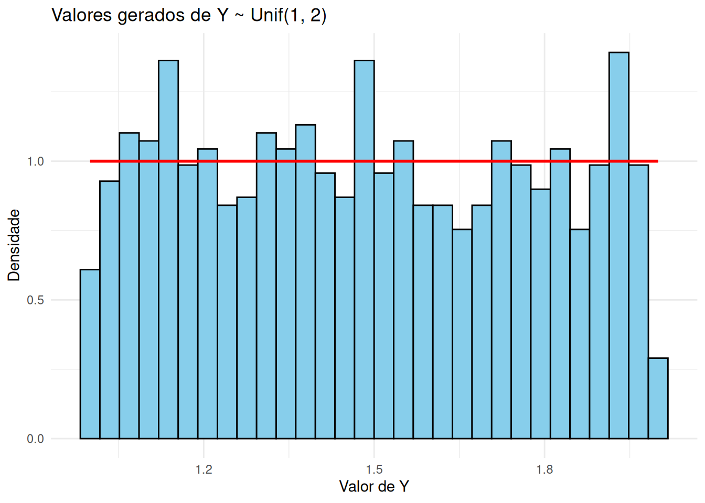
Mostrar código
import numpy as npimport matplotlib.pyplot as pltnp.random.seed(42)B =1000# quantos valores queremos gerar# Passo 1: gerar os uniformesU = np.random.uniform(0, 1, B)# Passo 2: deslocar em uma unidade para obter Y ~ Unif(1, 2)Y = U +1# A densidade teórica é constante e igual a 1 no intervalo (1, 2)plt.figure(figsize=(10, 6))plt.hist(Y, bins=30, color='skyblue', edgecolor='black', density=True)plt.hlines(1, 1, 2, colors='red', linewidth=2)plt.title('Valores gerados de Y ~ Unif(1, 2)')plt.xlabel('Valor de Y')plt.ylabel('Densidade')plt.grid(True)plt.show()
Aqui a transformação não é aplicada a um único valor, mas a vários: usamos o fato de que, se \(X_1, \ldots, X_n\) são independentes e \(X_i \sim \text{Exp}(\lambda)\), então
\[
Y = \sum_{i=1}^{n} X_i \sim \text{Gama}(n, \lambda).
\]
Como já sabemos gerar exponenciais por inversão (Exemplo 2 do Capítulo 4), basta gerar \(n\) delas e somar.
Pseudo-algoritmo: Gama com parâmetro de forma inteiro
Note que esse algoritmo só serve quando o parâmetro de forma \(n\) é um inteiro positivo: a soma de exponenciais tem que ter um número inteiro de parcelas.
Para gerar \(B\) valores de \(Y\), precisamos de \(B \times n\) uniformes. No código abaixo, guardamos esses uniformes em uma matriz com \(B\) linhas e \(n\) colunas: cada linha reúne as \(n\) exponenciais de um mesmo \(Y\), e somar a linha produz um valor de \(Y\).
library(ggplot2)set.seed(42)n <-5# parâmetro de forma da Gama (número de exponenciais somadas)lambda <-2# parâmetro da distribuição exponencialB <-1000# quantos valores de Y queremos gerar# Passo 1: uma matriz de uniformes com B linhas e n colunasU <-matrix(runif(B * n, min =0, max =1), nrow = B, ncol = n)# Passo 2: a inversa da exponencial aplicada a cada entrada da matrizX <--log(1- U) / lambda# Passo 3: rowSums soma cada linha, devolvendo um vetor com os B valores de YY <-rowSums(X)df <-data.frame(Y = Y)# dgamma é a densidade da Gama; shape é o parâmetro de forma e rate a taxaggplot(df, aes(x = Y)) +geom_histogram(aes(y =after_stat(density)), bins =30,fill ="lightcoral", color ="black") +stat_function(fun =function(y) dgamma(y, shape = n, rate = lambda),color ="red", linewidth =1) +labs(title =paste0("Valores gerados de Y ~ Gama(", n, ", ", lambda, ")"),x ="Valor de Y", y ="Densidade") +theme_minimal()
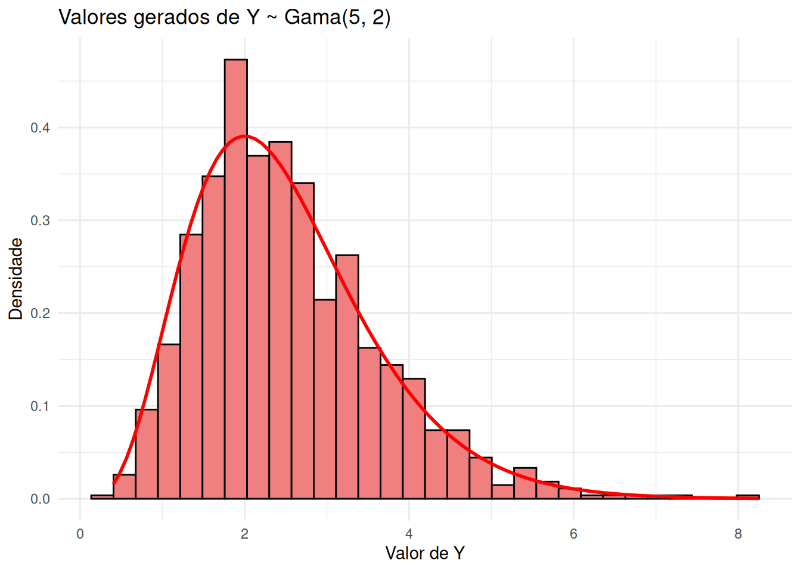
Mostrar código
import numpy as npimport matplotlib.pyplot as pltfrom scipy.stats import gammanp.random.seed(42)n =5# parâmetro de forma da Gama (número de exponenciais somadas)lambd =2# parâmetro da distribuição exponencialB =1000# quantos valores de Y queremos gerar# Passo 1: uma matriz de uniformes com B linhas e n colunasU = np.random.uniform(0, 1, (B, n))# Passo 2: a inversa da exponencial aplicada a cada entrada da matrizX =-np.log(1- U) / lambd# Passo 3: soma de cada linha (axis=1), devolvendo os B valores de YY = np.sum(X, axis=1)# Malha usada só para desenhar a densidade teóricagrade = np.linspace(0, max(Y), 200)# gamma.pdf: a é o parâmetro de forma e scale = 1 / taxaplt.figure(figsize=(10, 6))plt.hist(Y, bins=30, color='lightcoral', edgecolor='black', density=True)plt.plot(grade, gamma.pdf(grade, a=n, scale=1/ lambd), color='red', linewidth=2)plt.title(f'Valores gerados de Y ~ Gama({n}, {lambd})')plt.xlabel('Valor de Y')plt.ylabel('Densidade')plt.grid(True)plt.show()
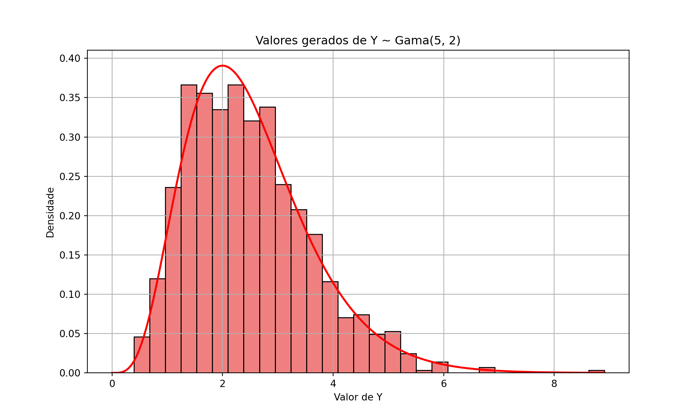
7.4 Exemplo 3: distribuição de Weibull
Seja \(X\) uma v.a. com distribuição de Weibull com parâmetro de forma \(k > 0\) e parâmetro de escala \(\lambda > 0\), cuja densidade é
É uma distribuição muito usada em análise de sobrevivência e em engenharia de confiabilidade, para modelar tempos até a falha de um equipamento. O parâmetro \(k\) controla se a taxa de falha cresce (\(k > 1\)), decresce (\(k < 1\)) ou fica constante (\(k = 1\)) ao longo do tempo; quando \(k = 1\), a Weibull é exatamente uma \(\text{Exp}(1/\lambda)\).
Em vez de trabalhar diretamente com essa densidade, vamos escrever a Weibull como uma transformação simples de uma exponencial — distribuição que já sabemos simular desde o Capítulo 4.
Proposição
Se \(Y \sim \text{Exp}(1/\lambda^k)\), isto é, \(Y\) é exponencial com taxa\(1/\lambda^k\), então
\[
X = Y^{1/k} \sim \text{Weibull}(\lambda, k).
\]
Demonstração
A densidade de \(Y\) é
\[
f_Y(y) = \frac{1}{\lambda^k} e^{-y/\lambda^k}, \quad y > 0.
\]
A função \(g(y) = y^{1/k}\) é estritamente crescente em \((0,\infty)\), com inversa \(g^{-1}(x) = x^k\). Logo, para \(x > 0\),
que é exatamente a densidade da Weibull. \(\square\)
Falta simular \(Y\). Pelo método da inversão, uma exponencial de taxa \(\theta\) é gerada por \(Y = -\log(1 - U)/\theta\); aqui \(\theta = 1/\lambda^k\), de modo que \(Y = -\lambda^k \log(1 - U)\).
Trocar \(1 - U\) por \(U\)
Se \(U \sim \text{Unif}(0,1)\), então \(1 - U\) também é \(\text{Unif}(0,1)\). Por isso podemos escrever \(Y = -\lambda^k \log U\) no lugar de \(Y = -\lambda^k \log(1-U)\): as duas expressões geram valores com a mesma distribuição (embora, para um mesmo \(U\), produzam números diferentes).
Pseudo-algoritmo: Weibull
Gere \(U \sim \text{Unif}(0,1)\).
Faça \(Y = -\lambda^k \log U\), de modo que \(Y \sim \text{Exp}(1/\lambda^k)\).
Devolva \(X = Y^{1/k}\).
Juntando os passos 2 e 3, o algoritmo inteiro cabe em uma linha: \(X = \lambda \left(-\log U\right)^{1/k}\).
Aqui, transformação e inversão coincidem
A f.d.a. da Weibull é \(F(x) = 1 - e^{-(x/\lambda)^k}\); isolando \(x\) em \(u = F(x)\), obtemos \(F^{-1}(u) = \lambda\left(-\log(1-u)\right)^{1/k}\), que é exatamente a expressão a que chegamos (com \(1-U\) no lugar de \(U\)). Não é coincidência: quando \(g\) é monótona e \(Y\) é gerada por inversão, aplicar \(g\) dá no mesmo que inverter a f.d.a. de \(X\).
A transformação só ganha da inversão quando \(F_X\) é intratável mas a relação entre \(X\) e \(Y\) é simples — como nos Exemplos 2 e 4, em que nem sequer há uma única variável \(Y\) a inverter.
O código a seguir gera \(B = 5000\) valores com \(k = 1{,}5\) e \(\lambda = 2\), e compara o histograma com a densidade teórica. Como conferência adicional, comparamos a média amostral com a média teórica \(\mathbb{E}[X] = \lambda\,\Gamma(1 + 1/k)\).
library(ggplot2)set.seed(42)k <-1.5# parâmetro de formalambda <-2# parâmetro de escalaB <-5000# quantos valores queremos gerar# Passo 1: os uniformesU <-runif(B)# Passo 2: Y ~ Exp(1/lambda^k), pelo método da inversãoY <--lambda^k *log(U)# Passo 3: a transformação que leva a exponencial na WeibullX <- Y^(1/ k)# gamma() em R é a função Gama, e não a densidade da distribuição Gamacat("Média amostral:", round(mean(X), 3), "\n")
df <-data.frame(x = X)# dweibull é a densidade da Weibull: shape é a forma e scale a escalaggplot(df, aes(x = x)) +geom_histogram(aes(y =after_stat(density)), bins =40,fill ="skyblue", color ="black") +stat_function(fun =function(x) dweibull(x, shape = k, scale = lambda),color ="red", linewidth =1) +labs(title ="Weibull gerada por transformação de uma exponencial",x ="Valor de X", y ="Densidade") +theme_minimal()
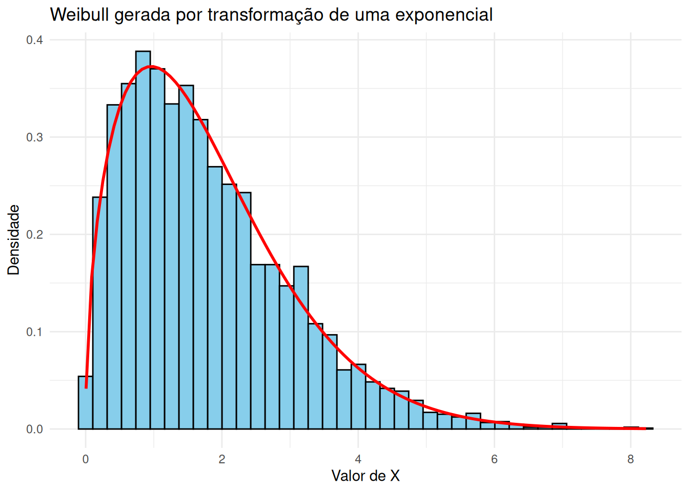
Mostrar código
import mathimport numpy as npimport matplotlib.pyplot as pltfrom scipy.stats import weibull_minnp.random.seed(42)k =1.5# parâmetro de formalambd =2# parâmetro de escalaB =5000# quantos valores queremos gerar# Passo 1: os uniformesU = np.random.uniform(0, 1, B)# Passo 2: Y ~ Exp(1/lambda^k), pelo método da inversãoY =-lambd**k * np.log(U)# Passo 3: a transformação que leva a exponencial na WeibullX = Y**(1/ k)# math.gamma é a função Gama, e não a densidade da distribuição Gamaprint("Média amostral:", round(X.mean(), 3))
# Malha usada só para desenhar a densidade teóricagrade = np.linspace(0, X.max(), 400)# weibull_min.pdf: c é a forma e scale a escalaplt.figure(figsize=(8, 5))plt.hist(X, bins=40, density=True, color="skyblue", edgecolor="black")plt.plot(grade, weibull_min.pdf(grade, c=k, scale=lambd), color="red", linewidth=2)plt.title("Weibull gerada por transformação de uma exponencial")plt.xlabel("Valor de X")plt.ylabel("Densidade")plt.show()
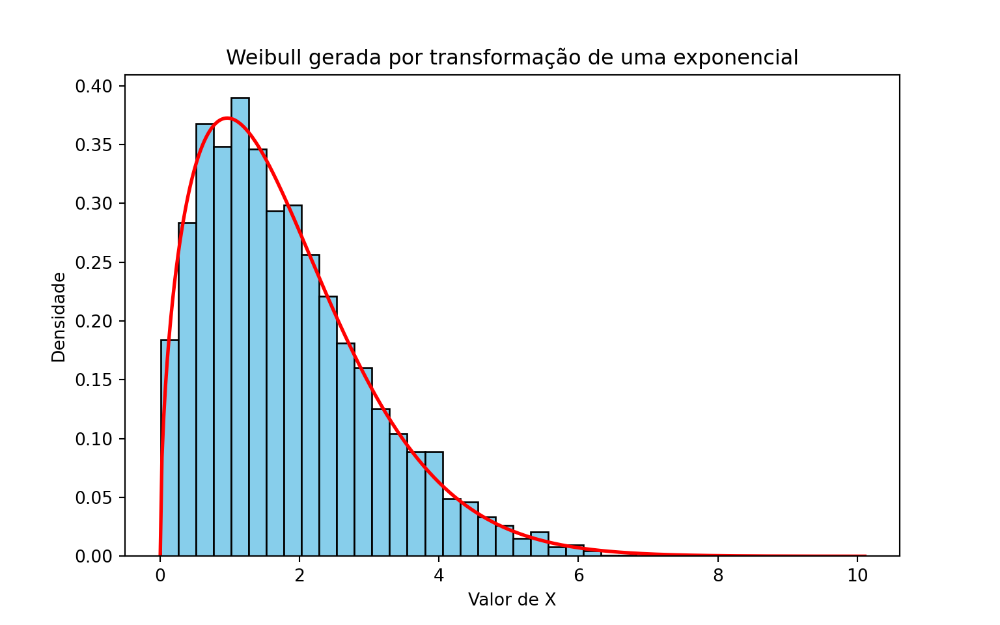
7.5 Exemplo 4: distribuição qui-quadrado
Este exemplo usa uma transformação de várias variáveis, e será a peça que falta para o Exemplo 7.
Por definição, se \(Z_1, \dots, Z_k\) são independentes e \(Z_i \sim N(0,1)\), então
Ou seja, \(g(z_1, \dots, z_k) = z_1^2 + \dots + z_k^2\) e \(Y = (Z_1, \dots, Z_k)\). Como já sabemos gerar normais pelo método da rejeição (Exemplo 2 do Capítulo 6), o algoritmo é imediato.
Pseudo-algoritmo: qui-quadrado com \(k\) graus de liberdade
Gere \(Z_1, \dots, Z_k\) independentes, todas \(N(0,1)\).
Devolva \(X = \sum_{i=1}^{k} Z_i^2\).
Um caminho alternativo
A \(\chi^2_k\) é o mesmo que uma \(\text{Gama}(k/2, 1/2)\). Quando \(k\) é par, \(k/2\) é inteiro e podemos gerá-la somando \(k/2\) variáveis \(\text{Exp}(1/2)\), como no Exemplo 2 — sem precisar de nenhuma normal. Em particular, \(\chi^2_2 = \text{Exp}(1/2)\), fato que reaparecerá no capítulo sobre o método de Box-Muller.
No código abaixo usamos as funções prontas rnorm e np.random.normal para gerar as normais, em vez de repetir o algoritmo de rejeição do capítulo anterior.
library(ggplot2)set.seed(42)k <-5# graus de liberdadeB <-5000# quantos valores queremos gerar# Passo 1: uma matriz de normais com B linhas e k colunas. Cada linha reúne as# k normais de um mesmo valor de XZ <-matrix(rnorm(B * k), nrow = B, ncol = k)# Passo 2: rowSums soma cada linha, devolvendo os B valores de XX <-rowSums(Z^2)cat("Média amostral:", round(mean(X), 3), " (teórica:", k, ")\n")
df <-data.frame(x = X)ggplot(df, aes(x = x)) +geom_histogram(aes(y =after_stat(density)), bins =40,fill ="lightgreen", color ="black") +stat_function(fun =function(x) dchisq(x, df = k),color ="red", linewidth =1) +labs(title ="Qui-quadrado como soma de quadrados de normais",x ="Valor de X", y ="Densidade") +theme_minimal()
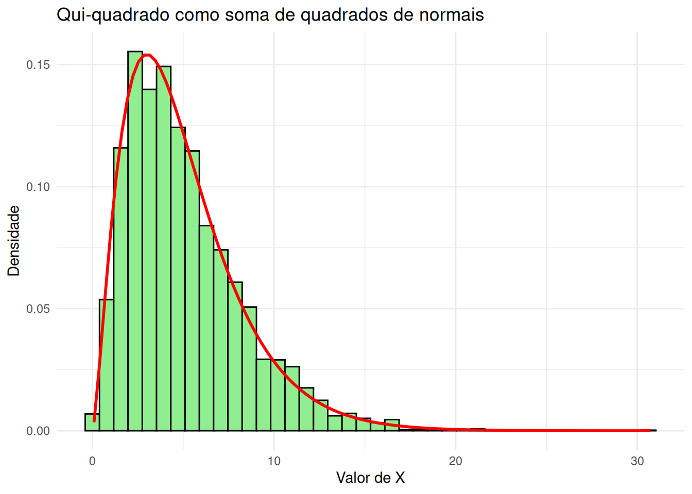
Mostrar código
import numpy as npimport matplotlib.pyplot as pltfrom scipy.stats import chi2np.random.seed(42)k =5# graus de liberdadeB =5000# quantos valores queremos gerar# Passo 1: uma matriz de normais com B linhas e k colunas. Cada linha reúne as# k normais de um mesmo valor de XZ = np.random.normal(0, 1, (B, k))# Passo 2: soma de cada linha (axis=1), devolvendo os B valores de XX = np.sum(Z**2, axis=1)print("Média amostral:", round(X.mean(), 3), " (teórica:", k, ")")
# Malha usada só para desenhar a densidade teóricagrade = np.linspace(0, X.max(), 400)plt.figure(figsize=(8, 5))plt.hist(X, bins=40, density=True, color="lightgreen", edgecolor="black")plt.plot(grade, chi2.pdf(grade, df=k), color="red", linewidth=2)plt.title("Qui-quadrado como soma de quadrados de normais")plt.xlabel("Valor de X")plt.ylabel("Densidade")plt.show()
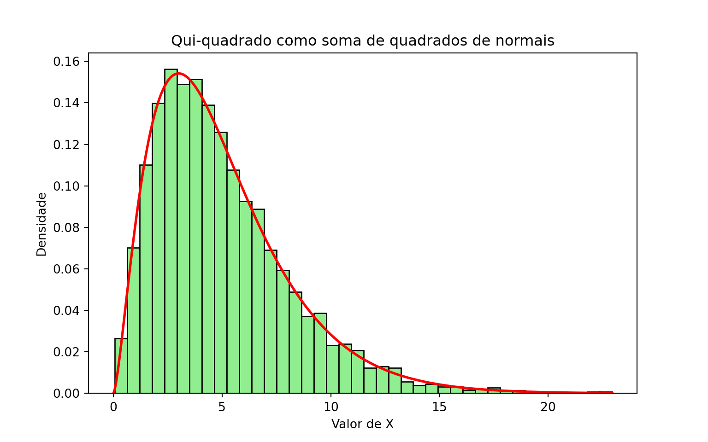
7.6 Exemplo 5: um vetor de normais correlacionadas
Nos dois exemplos anteriores, \(g\) recebia uma ou várias variáveis e devolvia um número. Neste exemplo, \(g\) devolve um vetor — e é essa a construção usada sempre que se quer simular várias medidas de um mesmo indivíduo, que não são independentes entre si: altura e peso de uma pessoa, notas de um aluno em disciplinas diferentes, preços de ações em uma carteira.
Queremos gerar um vetor \(X = (X_1, \dots, X_d)\) com distribuição normal multivariada, isto é, com vetor de médias \(\mu\) e matriz de covariâncias \(\Sigma\) dados. O que sabemos fazer é gerar \(Z = (Z_1, \dots, Z_d)\) com coordenadas independentes \(N(0,1)\) — um vetor com médias nulas e matriz de covariâncias igual à identidade.
A transformação que procuramos é afim: \(X = \mu + LZ\), para alguma matriz \(L\) de dimensão \(d \times d\). Falta descobrir qual. Como somar \(\mu\) só desloca as médias, o trabalho está em achar \(L\) que produza as covariâncias certas.
Definição: decomposição de Cholesky
Seja \(\Sigma\) uma matriz simétrica e positiva definida (o que toda matriz de covariâncias de um vetor não degenerado é). Existe uma única matriz \(L\) triangular inferior, com todos os elementos da diagonal positivos, tal que
\[
\Sigma = L L^{\top}.
\]
Essa matriz é a decomposição de Cholesky de \(\Sigma\), e pode ser vista como uma “raiz quadrada” de \(\Sigma\). Ela é calculada por chol no R e por np.linalg.cholesky no Python.
Proposição
Sejam \(Z_1, \dots, Z_d\) independentes e \(N(0,1)\), \(\mu \in \mathbb{R}^d\) e \(\Sigma = LL^{\top}\). Então
\[
X = \mu + L Z
\]
é um vetor normal multivariado com médias \(\mu\) e matriz de covariâncias \(\Sigma\).
Demonstração
Que \(X\) é normal multivariado segue de um resultado padrão: transformações afins de vetores normais são normais. Restam as duas primeiras características.
Para as covariâncias, escrevemos a matriz de covariâncias na forma \(\text{Cov}(X) = \mathbb{E}\left[(X - \mu)(X - \mu)^{\top}\right]\). Como \(X - \mu = LZ\),
onde na última passagem tiramos \(L\) e \(L^\top\) de dentro da esperança, por serem constantes. Agora, \(\mathbb{E}[Z Z^{\top}]\) é a matriz de covariâncias de \(Z\): como as coordenadas são independentes e têm variância 1, ela é a identidade \(I\). Logo,
Entradas: o vetor de médias \(\mu\) e a matriz de covariâncias \(\Sigma\).
Calcule a decomposição de Cholesky \(\Sigma = L L^{\top}\) (uma única vez, fora do laço).
Gere \(Z_1, \dots, Z_d\) independentes, todas \(N(0,1)\).
Devolva \(X = \mu + L Z\).
Vamos simular três medidas de uma pessoa — altura, peso e circunferência da cintura —, com médias \(170\) cm, \(70\) kg e \(85\) cm, desvios padrão \(8\), \(12\) e \(10\), e correlações \(0{,}6\) entre altura e peso, \(0{,}3\) entre altura e cintura e \(0{,}8\) entre peso e cintura.
É mais natural especificar desvios padrão e correlações do que a matriz de covariâncias diretamente. A conversão é \(\Sigma = D R D\), em que \(R\) é a matriz de correlações e \(D\) é a matriz diagonal com os desvios padrão — afinal, \(\text{Cov}(X_i, X_j) = \sigma_i \sigma_j \rho_{ij}\).
Atenção: chol do R devolve a transposta
As duas linguagens usam convenções diferentes. O np.linalg.cholesky do Python devolve a triangular inferior\(L\), com \(\Sigma = LL^\top\), que é exatamente a matriz do algoritmo. Já o chol do R devolve a triangular superior\(U\), com \(\Sigma = U^\top U\); a matriz \(L\) do algoritmo é, portanto, t(chol(Sigma)).
Esquecer a transposta não gera erro: o programa roda normalmente e devolve vetores normais com as médias certas, mas com variâncias e correlações diferentes das pedidas. É um bug silencioso, do tipo que só aparece quando se conferem os desvios e as correlações amostrais — como fazemos no código abaixo.
library(ggplot2)set.seed(42)# Médias e desvios padrão de altura (cm), peso (kg) e cintura (cm)mu <-c(170, 70, 85)desvios <-c(8, 12, 10)correlacoes <-matrix(c(1.0, 0.6, 0.3,0.6, 1.0, 0.8,0.3, 0.8, 1.0), nrow =3, byrow =TRUE)# Sigma = D R D, em que D = diag(desvios). O operador %*% é a multiplicação# de matrizes; o * comum multiplicaria elemento a elemento, o que seria erradoSigma <-diag(desvios) %*% correlacoes %*%diag(desvios)# Passo 1: Cholesky, feito uma única vez. O t() é a transposta, necessária# porque chol() devolve a triangular superiorL <-t(chol(Sigma))cat("Matriz L:\n")
df <-data.frame(altura = X[, 1], peso = X[, 2])ggplot(df, aes(x = altura, y = peso)) +geom_point(alpha =0.3, size =0.8) +labs(title ="Altura e peso simulados (correlação teórica de 0,6)",x ="Altura (cm)", y ="Peso (kg)") +theme_minimal()
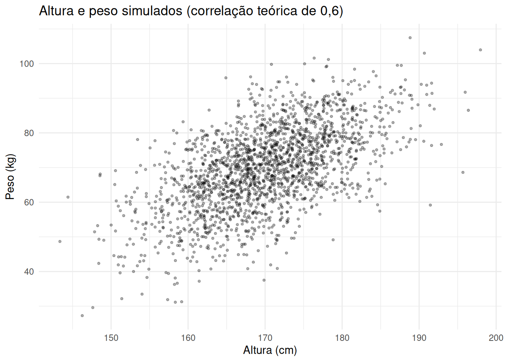
Mostrar código
import numpy as npimport matplotlib.pyplot as pltnp.random.seed(42)# Médias e desvios padrão de altura (cm), peso (kg) e cintura (cm)mu = np.array([170, 70, 85])desvios = np.array([8, 12, 10])correlacoes = np.array([[1.0, 0.6, 0.3], [0.6, 1.0, 0.8], [0.3, 0.8, 1.0]])# Sigma = D R D, em que D = diag(desvios). O operador @ é a multiplicação de# matrizes (o equivalente ao %*% do R); o * comum multiplicaria elemento a# elemento, o que seria erradoSigma = np.diag(desvios) @ correlacoes @ np.diag(desvios)# Passo 1: Cholesky, feito uma única vez. Aqui já vem a triangular inferiorL = np.linalg.cholesky(Sigma)print("Matriz L:")
Matriz L:
Mostrar código
print(np.round(L, 2))
[[8. 0. 0. ]
[7.2 9.6 0. ]
[3. 7.75 5.56]]
Mostrar código
B =2000X = np.zeros((B, 3))for b inrange(B): Z = np.random.normal(size=3) # Passo 2: três normais padrão independentes X[b, :] = mu + L @ Z # Passo 3: a transformação afimprint("\nMédias amostrais :", np.round(X.mean(axis=0), 2))
plt.figure(figsize=(8, 5))plt.scatter(X[:, 0], X[:, 1], alpha=0.3, s=6, color="black")plt.title("Altura e peso simulados (correlação teórica de 0,6)")plt.xlabel("Altura (cm)")plt.ylabel("Peso (kg)")plt.show()
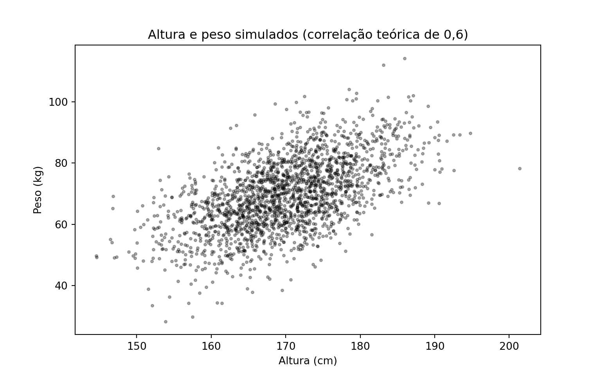
As médias, os desvios padrão e as correlações amostrais reproduzem os valores pedidos, e a nuvem de pontos tem a inclinação esperada de duas variáveis positivamente correlacionadas. Note que o passo caro — a decomposição de Cholesky — é feito uma única vez, fora do laço: gerar mais um vetor custa apenas \(d\) normais padrão e uma multiplicação por \(L\).
No próximo capítulo veremos o caso \(d = 2\) construído à mão, sem matrizes, diretamente a partir do método de Box-Muller.
7.7 Misturas
Agora a segunda construção. Suponha que saibamos simular uma v.a. \(Y\) e que, dado o valor de \(Y\), saibamos também simular \(X\). Se a densidade de \(X\) puder ser escrita como
dizemos que a distribuição de \(X\) é uma distribuição de mistura. A variável \(Y\) é chamada de variável de mistura, e simulá-la é o primeiro passo do algoritmo.
As duas fórmulas se distinguem apenas por integrar ou somar sobre os valores de \(Y\); a natureza de \(X\) é indiferente. Quando \(X\) também é discreta, basta trocar as densidades \(f\) por funções de probabilidade — é o que acontece nos Exercícios 6 e 7.
Pseudo-algoritmo: método da mistura
Simule um valor \(y\) a partir da distribuição de \(Y\).
Simule \(X\) a partir da distribuição condicional de \(X\) dado \(Y = y\), e devolva esse valor (descartando \(y\)).
Proposição
O valor \(X\) devolvido pelo algoritmo acima tem densidade \(f_X(x) = \int f_{X|Y}(x \mid y) f_Y(y)\, dy\).
Demonstração
Pela definição de densidade condicional, a densidade conjunta do par \((X, Y)\) é
\[
f_{X,Y}(x, y) = f_{X|Y}(x \mid y)\, f_Y(y).
\]
O algoritmo produz exatamente um par com essa conjunta: o passo 1 gera \(Y\) com densidade \(f_Y\), e o passo 2 gera, condicionalmente a \(Y = y\), um valor com densidade \(f_{X|Y}(\cdot \mid y)\). Descartar \(y\) e ficar apenas com \(X\) corresponde a tomar a densidade marginal, ou seja, a integrar a conjunta em \(y\):
Como no caso da transformação, a demonstração é curta e o trabalho de verdade é o inverso dela: dada uma densidade \(f_X\) que queremos simular, reconhecer quais \(Y\) e \(X \mid Y\) a produzem. O Exemplo 7 mostra um caso em que essa decomposição não é nada óbvia.
Quando \(Y\) é discreta e assume apenas os valores \(1, \dots, m\), a mistura toma a forma particularmente simples
com \(w_j \geq 0\) e \(\sum_j w_j = 1\): a densidade de \(X\) é uma média ponderada de \(m\) densidades. Nesse caso o método também é chamado de método da composição, e o algoritmo é: sorteie qual das \(m\) distribuições usar (com probabilidades \(w_1, \dots, w_m\)) e gere um valor dela.
Atenção: misturar não é fazer média
São as densidades que entram na combinação linear, não as variáveis. Se \(X_1 \sim N(-3,1)\) e \(X_2 \sim N(3,1)\) são independentes, a mistura com pesos \(1/2\) é a variável que vale \(X_1\) ou \(X_2\) conforme o resultado de um cara ou coroa — e tem densidade bimodal, com picos em \(-3\) e \(3\). Já a média \((X_1 + X_2)/2\) é uma \(N(0, 1/2)\): unimodal, concentrada em torno de zero, e sem nenhuma massa perto dos picos. As duas construções não têm nada a ver uma com a outra.
Assim como no caso das transformações, já usamos misturas sem lhes dar nome: no Exemplo 2 do Capítulo 6, geramos por rejeição um valor \(Y\) com a distribuição de \(|X|\), sorteamos um sinal \(S = \pm 1\) e devolvemos \(S \cdot Y\). Aquilo era uma mistura de duas componentes com pesos \(1/2\) — a normal restrita aos valores positivos e a restrita aos negativos.
7.8 Exemplo 6: mistura de duas normais
O caso mais comum de mistura discreta aparece quando a população estudada tem dois grupos com comportamentos diferentes: peças produzidas por duas máquinas, alunos que estudaram e que não estudaram, pacientes que responderam e que não responderam ao tratamento. Se a proporção do primeiro grupo é \(w\) e as duas subpopulações são normais, a densidade da população inteira é
em que \(\varphi(\cdot\,; \mu, \sigma)\) denota a densidade da \(N(\mu, \sigma^2)\).
Vamos simular o caso \(w = 0{,}7\), com \(N(0,1)\) no primeiro grupo e \(N(4, 0{,}5^2)\) no segundo. Aqui a variável de mistura é \(Y \sim \text{Bernoulli}(w)\), que sorteia o grupo.
Pseudo-algoritmo: mistura de duas normais
Gere \(U \sim \text{Unif}(0,1)\).
Se \(U \leq w\), gere e devolva \(X \sim N(\mu_1, \sigma_1^2)\).
Caso contrário, gere e devolva \(X \sim N(\mu_2, \sigma_2^2)\).
O laço abaixo é escrito passo a passo, seguindo o pseudo-algoritmo: para cada um dos \(B\) valores, primeiro sorteamos o grupo e só depois geramos a normal correspondente.
library(ggplot2)set.seed(42)w <-0.7# peso da primeira componentemu1 <-0; sigma1 <-1mu2 <-4; sigma2 <-0.5B <-5000# quantos valores queremos gerarX <-numeric(B) # vetor que guardará os valores geradosgrupo <-numeric(B) # guarda de qual componente veio cada valorfor (i in1:B) {# Passo 1: o uniforme que sorteia a componente U <-runif(1)# Passos 2 e 3: geramos da normal correspondente ao grupo sorteadoif (U <= w) { grupo[i] <-1 X[i] <-rnorm(1, mean = mu1, sd = sigma1) } else { grupo[i] <-2 X[i] <-rnorm(1, mean = mu2, sd = sigma2) }}# A densidade da mistura é a média ponderada das duas densidadesdensidade_mistura <-function(x) { w *dnorm(x, mu1, sigma1) + (1- w) *dnorm(x, mu2, sigma2)}cat("Proporção sorteada do primeiro grupo:", round(mean(grupo ==1), 3)," (peso w =", w, ")\n")
Proporção sorteada do primeiro grupo: 0.694 (peso w = 0.7 )
Mostrar código
df <-data.frame(x = X)ggplot(df, aes(x = x)) +geom_histogram(aes(y =after_stat(density)), bins =50,fill ="skyblue", color ="black") +stat_function(fun = densidade_mistura, color ="red", linewidth =1) +labs(title ="Mistura de N(0,1) e N(4, 0.25) com pesos 0.7 e 0.3",x ="Valor de X", y ="Densidade") +theme_minimal()
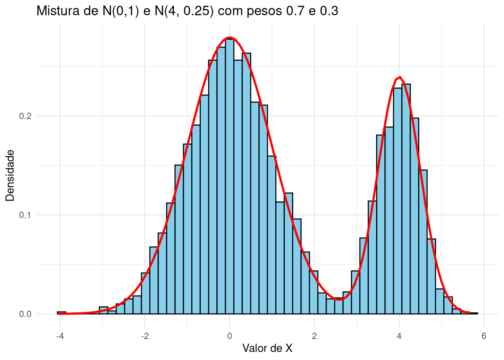
Mostrar código
import numpy as npimport matplotlib.pyplot as pltfrom scipy.stats import normnp.random.seed(42)w =0.7# peso da primeira componentemu1, sigma1 =0, 1mu2, sigma2 =4, 0.5B =5000# quantos valores queremos gerarX = np.zeros(B) # vetor que guardará os valores geradosgrupo = np.zeros(B) # guarda de qual componente veio cada valorfor i inrange(B):# Passo 1: o uniforme que sorteia a componente U = np.random.uniform(0, 1)# Passos 2 e 3: geramos da normal correspondente ao grupo sorteadoif U <= w: grupo[i] =1 X[i] = np.random.normal(mu1, sigma1)else: grupo[i] =2 X[i] = np.random.normal(mu2, sigma2)# A densidade da mistura é a média ponderada das duas densidadesdef densidade_mistura(x):return w * norm.pdf(x, mu1, sigma1) + (1- w) * norm.pdf(x, mu2, sigma2)print("Proporção sorteada do primeiro grupo:", round(np.mean(grupo ==1), 3)," (peso w =", w, ")")
Proporção sorteada do primeiro grupo: 0.714 (peso w = 0.7 )
Mostrar código
# Malha usada só para desenhar a densidade teóricagrade = np.linspace(X.min(), X.max(), 400)plt.figure(figsize=(8, 5))plt.hist(X, bins=50, density=True, color="skyblue", edgecolor="black")plt.plot(grade, densidade_mistura(grade), color="red", linewidth=2)plt.title("Mistura de N(0,1) e N(4, 0.25) com pesos 0.7 e 0.3")plt.xlabel("Valor de X")plt.ylabel("Densidade")plt.show()
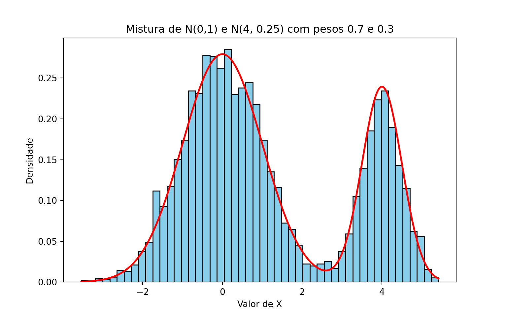
Repare que a densidade resultante tem dois picos, e que nenhuma das duas componentes, sozinha, se parece com ela. Nenhum método baseado em inverter \(F\) seria confortável aqui; a mistura, ao contrário, praticamente lê o algoritmo na própria fórmula da densidade.
7.9 Exemplo 7: distribuição t de Student
Neste exemplo a mistura é contínua, e a decomposição está longe de ser óbvia: partimos de uma densidade complicada e descobrimos que ela esconde uma normal cuja variância é, ela própria, aleatória.
A integral que sobrou é a da densidade de uma Gama, a menos de constantes: para \(a > 0\) e \(b > 0\), \(\int_0^\infty y^{a-1} e^{-by} dy = \Gamma(a)/b^a\). Com \(a = (k+1)/2\) e \(b = x^2/(2k) + 1/2\),
Por fim, colocando \(1/2\) em evidência no denominador, \(\left(\frac{x^2}{2k} + \frac{1}{2}\right)^{(k+1)/2}
= 2^{-(k+1)/2}\left(\frac{x^2}{k} + 1\right)^{(k+1)/2}\), e os fatores \(2^{(k+1)/2}/(2^{k/2}\sqrt{2\pi})\) se simplificam para \(1/\sqrt{\pi}\), resultando em
Pseudo-algoritmo: t de Student com \(k\) graus de liberdade
Gere \(Y \sim \chi^2_k\) (pelo Exemplo 4, somando os quadrados de \(k\) normais padrão).
Gere e devolva \(X \sim N(0, k/Y)\), isto é, uma normal de média \(0\) e desvio padrão \(\sqrt{k/Y}\).
A mesma construção, vista como transformação
O passo 2 equivale a fazer \(X = \sqrt{k/Y}\, Z\), com \(Z \sim N(0,1)\) independente de \(Y\) — ou, reorganizando,
\[
X = \frac{Z}{\sqrt{Y/k}},
\]
que é a definição da \(t_k\) vista em cursos de inferência. Mistura e transformação são, aqui, duas leituras da mesma construção: sortear uma normal cuja variância é aleatória é o mesmo que dividir uma normal por uma raiz de qui-quadrado.
O código abaixo gera \(B = 5000\) valores de uma \(t_5\) seguindo o pseudo-algoritmo, e compara o histograma com a densidade teórica. A curva tracejada é a densidade da \(N(0,1)\): ela ajuda a ver que a t tem caudas mais pesadas, que é justamente o efeito de deixar a variância variar.
library(ggplot2)set.seed(42)k <-5# graus de liberdadeB <-5000# quantos valores queremos gerarX <-numeric(B)for (i in1:B) {# Passo 1: Y ~ qui-quadrado com k graus de liberdade (Exemplo 4) Z <-rnorm(k) Y <-sum(Z^2)# Passo 2: a normal cuja variância depende do valor sorteado de Y X[i] <-rnorm(1, mean =0, sd =sqrt(k / Y))}# Quanto da massa está além de 3 desvios? Na t é bem mais que na normalcat("P(|X| > 3) observada:", round(mean(abs(X) >3), 4), "\n")
cat("P(|X| > 3) na N(0,1):", round(2*pnorm(-3), 4), "\n")
P(|X| > 3) na N(0,1): 0.0027
Mostrar código
# Para o histograma, olhamos só o intervalo [-6, 6]: a t tem caudas longas, e# uns poucos valores extremos deixariam todas as barras espremidas no centrodf <-data.frame(x = X[abs(X) <=6])ggplot(df, aes(x = x)) +geom_histogram(aes(y =after_stat(density)), bins =60,fill ="lightcoral", color ="black") +stat_function(fun =function(x) dt(x, df = k), color ="red",linewidth =1) +stat_function(fun = dnorm, color ="blue", linewidth =1,linetype ="dashed") +coord_cartesian(xlim =c(-6, 6)) +labs(title ="t de Student como mistura de normais (k = 5)",x ="Valor de X", y ="Densidade") +theme_minimal()
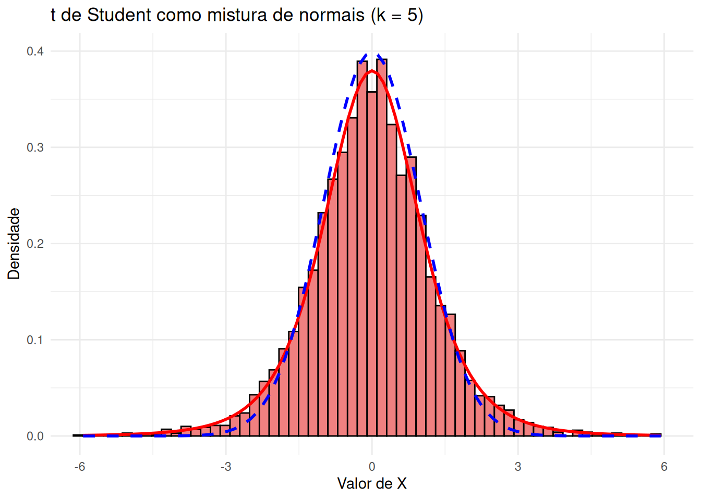
Mostrar código
import numpy as npimport matplotlib.pyplot as pltfrom scipy.stats import t, normnp.random.seed(42)k =5# graus de liberdadeB =5000# quantos valores queremos gerarX = np.zeros(B)for i inrange(B):# Passo 1: Y ~ qui-quadrado com k graus de liberdade (Exemplo 4) Z = np.random.normal(0, 1, k) Y = np.sum(Z**2)# Passo 2: a normal cuja variância depende do valor sorteado de Y X[i] = np.random.normal(0, np.sqrt(k / Y))# Quanto da massa está além de 3 desvios? Na t é bem mais que na normalprint("P(|X| > 3) observada:", round(np.mean(np.abs(X) >3), 4))
P(|X| > 3) observada: 0.0264
Mostrar código
print("P(|X| > 3) na t_5:", round(2* t.cdf(-3, df=k), 4))
P(|X| > 3) na t_5: 0.0301
Mostrar código
print("P(|X| > 3) na N(0,1):", round(2* norm.cdf(-3), 4))
P(|X| > 3) na N(0,1): 0.0027
Mostrar código
# Malha usada só para desenhar as densidades teóricasgrade = np.linspace(-6, 6, 400)# Para o histograma, olhamos só o intervalo [-6, 6]: a t tem caudas longas, e# uns poucos valores extremos deixariam todas as barras espremidas no centroX_grafico = X[np.abs(X) <=6]plt.figure(figsize=(8, 5))plt.hist(X_grafico, bins=60, density=True, color="lightcoral", edgecolor="black")plt.plot(grade, t.pdf(grade, df=k), color="red", linewidth=2)plt.plot(grade, norm.pdf(grade), color="blue", linewidth=2, linestyle="--")plt.xlim(-6, 6)
(-6.0, 6.0)
Mostrar código
plt.title("t de Student como mistura de normais (k = 5)")plt.xlabel("Valor de X")plt.ylabel("Densidade")plt.show()
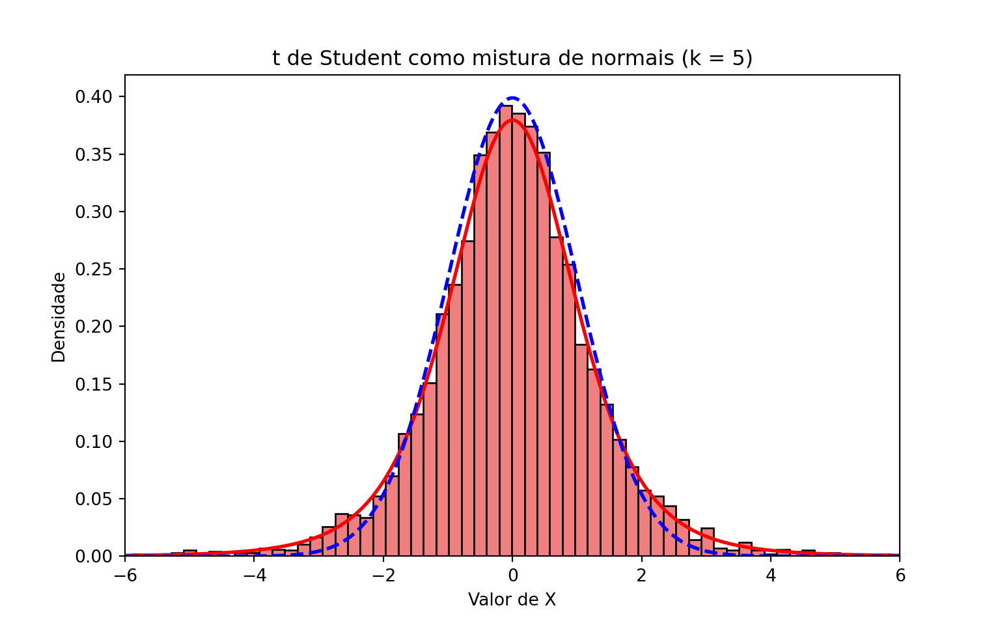
7.10 Exemplo 8: um modelo hierárquico
No exemplo anterior, partimos de uma densidade dada e descobrimos a mistura escondida nela. Este exemplo percorre o caminho oposto, que é o mais comum na prática: o modelo já nasce em dois estágios, porque é assim que o fenômeno está sendo descrito. Modelos com essa estrutura são chamados de hierárquicos.
Suponha que queremos modelar o número de consultas médicas que uma pessoa faz em um ano. Uma primeira tentativa seria dizer que esse número é \(\text{Poisson}(\lambda)\), com o mesmo \(\lambda\) para todo mundo. Mas isso é implausível: pessoas têm estados de saúde diferentes, e portanto taxas diferentes. O modelo hierárquico incorpora exatamente essa ideia:
Primeiro sorteamos a taxa da pessoa, depois sorteamos quantas consultas ela faz dada essa taxa. A distribuição Gama é uma escolha natural para \(\Lambda\) por ser positiva e flexível, e — como veremos — por levar a uma resposta conhecida.
Pseudo-algoritmo: modelo hierárquico Poisson–Gama
Gere \(\Lambda \sim \text{Gama}(r, \beta)\).
Gere e devolva \(N \sim \text{Poisson}(\Lambda)\).
O algoritmo é o método da mistura sem nenhuma novidade: a variável de mistura é \(\Lambda\), e \(N \mid \Lambda\) é a distribuição condicional. O que surpreende é a distribuição marginal que resulta disso.
Proposição
Se \(\Lambda \sim \text{Gama}(r, \beta)\) e \(N \mid \Lambda = \ell \sim
\text{Poisson}(\ell)\), então \(N\) tem distribuição Binomial Negativa com parâmetros \(r\) e \(p = \dfrac{\beta}{1 + \beta}\), isto é,
A integral que sobrou é a mesma que apareceu no Exemplo 7: para \(a > 0\) e \(b > 0\), \(\int_0^\infty \ell^{\,a-1} e^{-b\ell} d\ell = \Gamma(a)/b^a\). Com \(a = n + r\) e \(b = 1 + \beta\),
onde na última igualdade separamos \((1+\beta)^{n+r}\) em \((1+\beta)^r\) e \((1+\beta)^n\). Reconhecendo \(p = \beta/(1+\beta)\) e \(1 - p = 1/(1+\beta)\), chegamos à expressão do enunciado. \(\square\)
No código abaixo usamos \(r = 3\) e \(\beta = 1{,}5\), de modo que a taxa média é \(\mathbb{E}[\Lambda] = r/\beta = 2\) consultas por ano. Comparamos as frequências observadas com as probabilidades da Binomial Negativa e, para deixar clara a diferença, também com as de uma \(\text{Poisson}(2)\) — que tem exatamente a mesma média.
library(ggplot2)set.seed(42)r <-3# parâmetro de forma da Gamataxa <-1.5# parâmetro de taxa da Gama (o beta do texto; evitamos o nome# "beta" porque em R já existe uma função com esse nome)B <-5000N <-numeric(B)for (b in1:B) {# Passo 1: a taxa daquela pessoa lambda_pessoa <-rgamma(1, shape = r, rate = taxa)# Passo 2: quantas consultas ela faz, dada a sua taxa N[b] <-rpois(1, lambda = lambda_pessoa)}cat("Média amostral :", round(mean(N), 3)," (teórica:", r / taxa, ")\n")
valores <-0:12p_bn <- taxa / (1+ taxa)# factor com levels garante que todos os valores apareçam, mesmo os que# porventura não tenham sido sorteadosfrequencias <-as.numeric(table(factor(N, levels = valores))) / Bdf <-data.frame(valor = valores,observada = frequencias,binomial_negativa =dnbinom(valores, size = r, prob = p_bn),poisson =dpois(valores, lambda = r / taxa))ggplot(df, aes(x = valor)) +geom_col(aes(y = observada), fill ="skyblue", color ="black") +geom_point(aes(y = binomial_negativa), color ="red", size =2) +geom_point(aes(y = poisson), color ="blue", size =2, shape =17) +scale_x_continuous(breaks = valores) +labs(title ="Contagens geradas pelo modelo hierárquico",subtitle =paste("Círculos vermelhos: Binomial Negativa.","Triângulos azuis: Poisson de mesma média."),x ="Número de consultas", y ="Probabilidade") +theme_minimal()
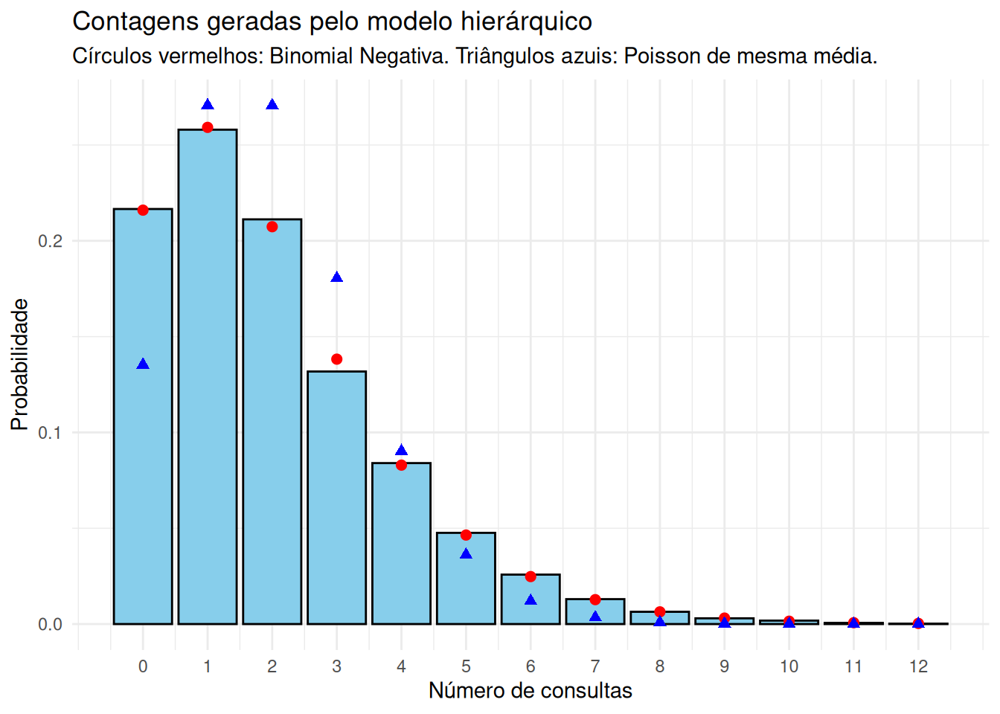
Mostrar código
import numpy as npimport matplotlib.pyplot as pltfrom scipy.stats import nbinom, poissonnp.random.seed(42)r =3# parâmetro de forma da Gamataxa =1.5# parâmetro de taxa da Gama (o beta do texto)B =5000N = np.zeros(B, dtype=int)for b inrange(B):# Passo 1: a taxa daquela pessoa. Atenção: np.random.gamma recebe a escala,# que é o inverso da taxa lambda_pessoa = np.random.gamma(shape=r, scale=1/ taxa)# Passo 2: quantas consultas ela faz, dada a sua taxa N[b] = np.random.poisson(lambda_pessoa)print("Média amostral :", round(N.mean(), 3)," (teórica:", r / taxa, ")")
([<matplotlib.axis.XTick object at 0x70305a040550>, <matplotlib.axis.XTick object at 0x703059febd90>, <matplotlib.axis.XTick object at 0x70305a068050>, <matplotlib.axis.XTick object at 0x70305a068a50>, <matplotlib.axis.XTick object at 0x70305a0691d0>, <matplotlib.axis.XTick object at 0x70305a069950>, <matplotlib.axis.XTick object at 0x70305a06a0d0>, <matplotlib.axis.XTick object at 0x70305a06a850>, <matplotlib.axis.XTick object at 0x70305a06afd0>, <matplotlib.axis.XTick object at 0x70305a06b750>, <matplotlib.axis.XTick object at 0x70305a06bed0>, <matplotlib.axis.XTick object at 0x70305a094690>, <matplotlib.axis.XTick object at 0x70305a094e10>], [Text(0, 0, '0'), Text(1, 0, '1'), Text(2, 0, '2'), Text(3, 0, '3'), Text(4, 0, '4'), Text(5, 0, '5'), Text(6, 0, '6'), Text(7, 0, '7'), Text(8, 0, '8'), Text(9, 0, '9'), Text(10, 0, '10'), Text(11, 0, '11'), Text(12, 0, '12')])
Mostrar código
plt.title("Contagens geradas pelo modelo hierárquico\n""Círculos vermelhos: Binomial Negativa. ""Triângulos azuis: Poisson de mesma média.")plt.xlabel("Número de consultas")plt.ylabel("Probabilidade")plt.show()
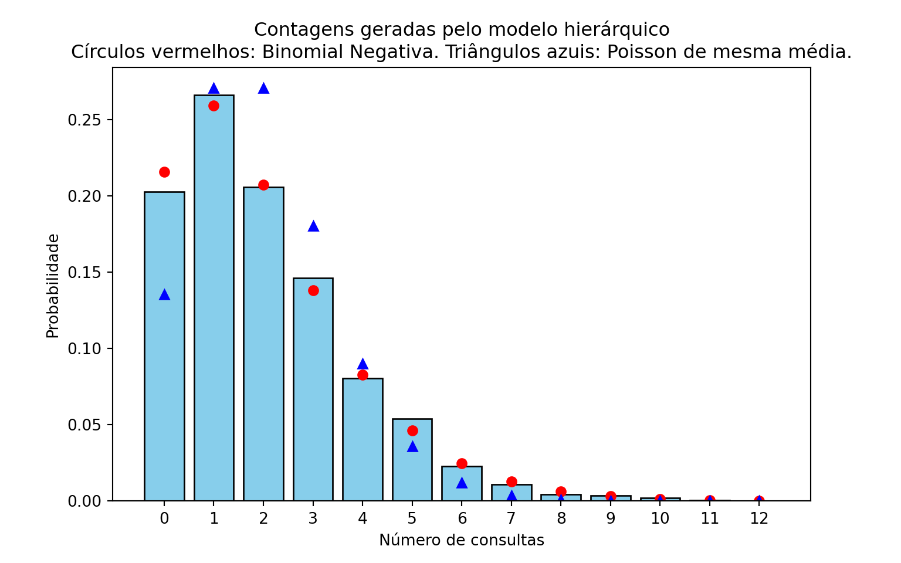
As frequências observadas seguem de perto a Binomial Negativa. Já a Poisson de mesma média erra em dois lugares que se compensam: ela dá probabilidade pequena demais ao valor \(0\) e probabilidade grande demais aos valores intermediários. Em dados reais de contagem, é exatamente essa a assinatura de que uma Poisson é simples demais para o problema.
Superdispersão
A variância teórica do modelo é maior que a média — \(3{,}33\) contra \(2\) —, enquanto na Poisson as duas coincidem. Esse excesso é chamado de superdispersão, e a lei da variância total mostra de onde ele vem:
usando que a Poisson tem média e variância iguais a \(\Lambda\). A primeira parcela é a variabilidade que existiria se todas as pessoas tivessem a mesma taxa; a segunda é a variabilidade entre as pessoas, que a Poisson simples ignora.
A mesma estrutura em inferência bayesiana
Vale registrar que o modelo deste exemplo é, palavra por palavra, um modelo bayesiano: a distribuição de \(\Lambda\) é o que se chama de priori, e a distribuição de \(N \mid \Lambda\) é a verossimilhança. Gerar valores pelo pseudo-algoritmo acima é simular da distribuição preditiva a priori — as contagens que o modelo considera plausíveis antes de ver qualquer dado.
Simular de modelos hierárquicos é, por isso, uma das operações mais frequentes em estatística bayesiana, e o algoritmo é sempre o mesmo: percorrer a hierarquia de cima para baixo, usando em cada estágio o valor sorteado no anterior.
7.11 Exercícios
Exercício 1. Este exercício explora a Weibull do Exemplo 3, cuja f.d.a. é \(F(x) = 1 - e^{-(x/\lambda)^k}\) para \(x > 0\).
Mostre que a mediana da Weibull é \(\lambda (\log 2)^{1/k}\).
Implemente o pseudo-algoritmo do Exemplo 3 em uma função que receba \(B\), \(k\) e \(\lambda\) e devolva uma amostra de tamanho \(B\).
Com \(\lambda = 2\) fixo, gere amostras de tamanho \(B = 5000\) para \(k = 0{,}5\), \(k = 1\) e \(k = 3\), e faça os três histogramas. Descreva como o formato da densidade muda com \(k\).
Para cada uma das três amostras, compare a mediana amostral com o valor obtido em (a).
Verifique numericamente que, quando \(k = 1\), a Weibull coincide com uma \(\text{Exp}(1/\lambda)\): sobreponha ao histograma correspondente a densidade da exponencial.
Exercício 2. Continuando o Exemplo 7, implemente uma função que gere uma amostra de tamanho \(B\) de uma \(t_k\) pelo método da mistura.
Gere \(B = 5000\) valores com \(k = 3\) e com \(k = 30\), e compare cada histograma com a densidade teórica (dt em R, scipy.stats.t.pdf em Python).
Sobreponha aos dois histogramas a densidade da \(N(0,1)\). O que acontece com a \(t_k\) quando \(k\) cresce? Explique o que ocorre com a variável de mistura \(Y/k\) quando \(k \to \infty\) (dica: lei dos grandes números).
Estime \(\mathbb{P}(X > 2)\) nos dois casos e compare com o valor correspondente para a normal padrão.
Usando a lei da variância total, \(\text{Var}(X) = \mathbb{E}[\text{Var}(X \mid Y)] + \text{Var}(\mathbb{E}[X \mid Y])\), mostre que \(\text{Var}(X) = k/(k-2)\) para \(k > 2\). Compare com a variância amostral obtida em (a). Por que a variância é maior do que \(1\), mesmo que \(\text{Var}(X \mid Y = y)\) possa ser menor?
Exercício 3. Existe uma relação clássica entre as distribuições Poisson e Exponencial: se \(X_1, X_2, \dots\) são independentes com \(X_i \sim \text{Exp}(\lambda)\), e definimos \(N\) como o maior inteiro tal que \(X_1 + \dots + X_N \leq 1\) (com \(N = 0\) se \(X_1 > 1\)), então \(N \sim \text{Poisson}(\lambda)\). Em outras palavras,
Escreva um pseudo-algoritmo que gere um valor de \(N\) somando exponenciais até que a soma ultrapasse \(1\).
Implemente o algoritmo, gere \(B = 5000\) valores com \(\lambda = 5\) e compare as frequências observadas com as probabilidades da Poisson (dpois em R, scipy.stats.poisson.pmf em Python).
Usando que \(X_i = -\log(U_i)/\lambda\), mostre que a condição \(X_1 + \cdots + X_j \leq 1\) é equivalente a \(U_1 U_2 \cdots U_j \geq e^{-\lambda}\). Reescreva o algoritmo usando apenas produtos de uniformes, sem calcular logaritmos.
Quantos uniformes o algoritmo consome, em média, por valor gerado? Compare o valor observado com \(\lambda + 1\).
(Desafio) Demonstre a relação enunciada acima. Use que \(X_1 + \cdots + X_j \sim \text{Gama}(j, \lambda)\) e escreva \(\mathbb{P}(N = j) = \mathbb{P}(S_j \leq 1) - \mathbb{P}(S_{j+1} \leq 1)\), em que \(S_j = X_1 + \cdots + X_j\).
Exercício 4. O Exemplo 2 gera uma \(\text{Gama}(n, \lambda)\) com parâmetro de forma inteiro, somando \(n\) exponenciais.
Implemente uma função que receba \(B\), \(a\) e \(b\) e devolva uma amostra de tamanho \(B\) da distribuição \(\text{Gama}(a,b)\), com \(a\) inteiro.
Compare a distribuição empírica dos valores simulados com a densidade da Gama \(f(x)=\frac{b^a}{\Gamma(a)}x^{a-1}e^{-bx}, x>0\).
Exercício 5. Sejam \(G_1\) e \(G_2\) independentes, com \(G_1 \sim \text{Gama}(a, 1)\) e \(G_2 \sim \text{Gama}(b, 1)\). Um resultado clássico afirma que
\[
X = \frac{G_1}{G_1 + G_2} \sim \text{Beta}(a, b).
\]
Note que essa é uma transformação de duas variáveis.
Escreva um pseudo-algoritmo para gerar uma \(\text{Beta}(2,4)\) usando esse resultado. Como \(a = 2\) e \(b = 4\) são inteiros, cada Gama pode ser gerada somando exponenciais (Exemplo 2).
Implemente o algoritmo, gere \(B = 5000\) valores e compare o histograma com a densidade \(f(x) = 20x(1-x)^3\) da \(\text{Beta}(2,4)\).
Essa mesma distribuição foi gerada por rejeição no Exemplo 1 do Capítulo 6. Quantos uniformes o método daquele capítulo consome, em média, por valor gerado? E este aqui? Qual dos dois é mais eficiente?
O que acontece com este método quando \(a\) ou \(b\) não são inteiros? E com o método da rejeição?
Exercício 6. O modelo da normal contaminada é uma mistura muito usada para representar dados com valores atípicos: com probabilidade \(1 - \epsilon\) a observação vem de uma \(N(0,1)\) (“dados bem comportados”) e, com probabilidade \(\epsilon\), de uma \(N(0, \sigma^2)\) com \(\sigma\) grande (“contaminação”). Use \(\epsilon = 0{,}05\) e \(\sigma = 5\).
Escreva a densidade da mistura e o pseudo-algoritmo correspondente.
Gere \(B = 5000\) valores e compare o histograma com a densidade da mistura e com a densidade da \(N(0,1)\). Onde está a diferença entre as duas curvas?
Mostre que \(\text{Var}(X) = (1-\epsilon) + \epsilon \sigma^2\) e compare com a variância amostral.
Gere \(1000\) amostras de tamanho \(30\) dessa distribuição. Para cada uma, calcule a média e a mediana amostrais. Faça o histograma dos \(1000\) valores de cada estatística e compare suas variâncias. Qual das duas é menos afetada pela contaminação?
Compare a amostra do item (b) com uma amostra de \(0{,}95 X_1 + 0{,}05 X_2\), com \(X_1 \sim N(0,1)\) e \(X_2 \sim N(0, 25)\) independentes. As duas construções produzem a mesma distribuição? (Compare os histogramas e releia o aviso da seção sobre misturas.)
Exercício 7. Em contagens reais é comum observar zeros demais para uma Poisson: pense no número de cigarros fumados por dia em uma amostra da população, em que boa parte das pessoas simplesmente não fuma. O modelo Poisson inflacionada de zeros trata disso como uma mistura: com probabilidade \(p\) a observação é o valor \(0\) (o indivíduo não é fumante) e, com probabilidade \(1 - p\), ela vem de uma \(\text{Poisson}(\lambda)\).
Mostre que \(\mathbb{P}(X = 0) = p + (1-p)e^{-\lambda}\) e que, para \(j \geq 1\), \(\mathbb{P}(X = j) = (1-p) e^{-\lambda} \lambda^j / j!\).
Escreva o pseudo-algoritmo e implemente-o. Gere \(B = 5000\) valores com \(p = 0{,}3\) e \(\lambda = 4\) (você pode usar o gerador do Exercício 3, ou as funções prontas rpois e np.random.poisson).
Compare as frequências relativas observadas com as probabilidades do item (a), usando um gráfico de barras.
Mostre que \(\mathbb{E}[X] = (1-p)\lambda\) e \(\text{Var}(X) = (1-p)\lambda(1 + p\lambda)\). Compare com a média e a variância amostrais. Por que dizemos que esse modelo apresenta superdispersão em relação à Poisson?
Ajuste uma Poisson aos dados simulados, isto é, calcule \(\hat{\lambda} = \bar{X}\) e desenhe as probabilidades da \(\text{Poisson}(\hat{\lambda})\) sobre o gráfico do item (c). Onde o ajuste falha?
Exercício 8. O Exemplo 8 construiu uma contagem a partir de uma taxa aleatória. Este exercício faz o mesmo com uma proporção aleatória. Suponha que cada aluno de uma turma acerte cada uma das \(m\) questões de uma prova com probabilidade \(P\), e que essa probabilidade varie de aluno para aluno:
\[
P \sim \text{Beta}(a, b),
\qquad
X \mid P = p \sim \text{Binomial}(m, p).
\]
Use \(m = 10\), \(a = 2\) e \(b = 3\).
Escreva o pseudo-algoritmo para gerar \(X\). Explique por que a Beta é uma escolha natural para \(P\). (Para gerar a Beta você pode usar o método do Exercício 5, ou as funções prontas rbeta e np.random.beta.)
Implemente-o e gere \(B = 5000\) valores. Compare as frequências observadas com as probabilidades da distribuição Beta-Binomial,
\[
\mathbb{P}(X = k) = \binom{m}{k}\, \frac{B(k + a,\; m - k + b)}{B(a, b)},
\]
em que \(B(\cdot, \cdot)\) é a função beta (beta em R, scipy.special.beta em Python).
Compare a média e a variância amostrais com as de uma amostra de \(\text{Binomial}(m,\, a/(a+b))\), que tem a mesma média teórica. Qual das duas é mais dispersa?
e explique em uma frase de onde vem a parcela extra em relação à Binomial.
Exercício 9. Sejam \(U_1, \dots, U_n\) independentes e \(\text{Unif}(0,1)\), e seja \(M = \max(U_1, \dots, U_n)\).
Mostre que \(F_M(x) = x^n\) para \(0 < x < 1\) e conclua, pelo método da inversão, que \(M\) tem a mesma distribuição de \(U^{1/n}\), com \(U \sim \text{Unif}(0,1)\).
Gere \(B = 10\,000\) valores de \(M\) com \(n = 10\) pelos dois caminhos — tomando o máximo de \(10\) uniformes, e aplicando \(U^{1/n}\) a um único uniforme — e compare os histogramas.
Quantos uniformes cada caminho consome? Meça o tempo de execução dos dois para \(n = 1000\) (com system.time em R ou time.time em Python) e comente.
O mesmo raciocínio vale para o mínimo: mostre que \(\min(U_1, \dots, U_n)\) tem a mesma distribuição de \(1 - U^{1/n}\).
Mais geralmente, a \(j\)-ésima menor observação de \(n\) uniformes tem distribuição \(\text{Beta}(j, n - j + 1)\). Use o método do Exercício 5 para gerar diretamente a \(3^\text{a}\) menor de \(10\) uniformes, e compare com o resultado de ordenar \(10\) uniformes e tomar a terceira.
Exercício 10. Uma seguradora quer estudar o total pago em sinistros durante um mês. O número de sinistros é \(N \sim \text{Poisson}(\lambda)\) e, dado \(N = n\), os valores individuais \(X_1, \dots, X_n\) são independentes e \(\text{Exp}(1/\mu)\) (isto é, com média \(\mu\)). O total é
\[
S = \sum_{i=1}^{N} X_i, \qquad \text{com } S = 0 \text{ se } N = 0.
\]
Essa é uma mistura (primeiro sorteamos \(N\)) combinada com uma transformação (somamos os \(X_i\)). Use \(\lambda = 3\) e \(\mu = 1000\).
Escreva o pseudo-algoritmo e implemente-o, gerando \(B = 5000\) valores de \(S\).
Faça o histograma de \(S\). Por que ele tem uma barra isolada em zero? Qual é o valor teórico de \(\mathbb{P}(S = 0)\)? Compare com a proporção observada.
Estime \(\mathbb{E}[S]\) e compare com o valor teórico \(\mathbb{E}[S] = \lambda \mu\) (dica: \(\mathbb{E}[S] = \mathbb{E}[\mathbb{E}[S \mid N]]\)).
Estime \(\mathbb{P}(S > 5000)\), a probabilidade de o mês custar mais de \(5000\) à seguradora.
Mostre que, condicionalmente a \(N = n \geq 1\), \(S \sim \text{Gama}(n, 1/\mu)\), e escreva a densidade de \(S\) na região \(s > 0\) como uma soma infinita. Sobreponha essa densidade (truncando a soma em \(n = 30\)) ao histograma do item (b), lembrando de descartar os valores nulos.
Exercício 11. Sobre a normal multivariada do Exemplo 5.
Implemente uma função que receba \(B\), o vetor \(\mu\) e a matriz \(\Sigma\) e devolva uma matriz com \(B\) linhas e \(d\) colunas, em que cada linha é um vetor gerado. Use-a para reproduzir o exemplo e confira as médias, os desvios padrão e as correlações amostrais.
O que acontece se você esquecer a transposta, usando chol(Sigma) no lugar de t(chol(Sigma)) em R (ou np.linalg.cholesky(Sigma).T em Python)? Gere 2000 vetores dessa forma e compare as médias, os desvios e as correlações amostrais com os valores pedidos. Quais das três características saem erradas?
Estime \(\mathbb{P}(X_1 > 180 \text{ e } X_2 > 80)\), a probabilidade de a pessoa ser ao mesmo tempo alta e pesada. Compare com o produto \(\mathbb{P}(X_1 > 180)\,\mathbb{P}(X_2 > 80)\), calculado a partir das marginais, e explique a diferença.
Verifique numericamente que qualquer combinação linear das coordenadas ainda é normal: faça o histograma de \(X_1 + X_2 + X_3\) e sobreponha a densidade da normal de média \(\mu_1 + \mu_2 + \mu_3\) e variância igual à soma de todas as entradas de \(\Sigma\).
Troque a correlação entre peso e cintura de \(0{,}8\) para \(0{,}9\) e depois para \(-0{,}9\), mantendo as outras duas. Em um dos casos a decomposição de Cholesky falha. Qual? Calcule o determinante das duas matrizes de correlação e explique o que a falha significa: por que não pode existir um vetor aleatório com essas três correlações ao mesmo tempo?
Exercício 12. (Desafio) O Exemplo 2 usa o fato de que a soma de \(n\) exponenciais independentes de taxa \(\lambda\) tem distribuição \(\text{Gama}(n, \lambda)\), mas não o demonstra.
Prove esse resultado por indução em \(n\). Para o passo indutivo, escreva a densidade de \(S_{n+1} = S_n + X_{n+1}\) como a convolução
Conclua que a \(\text{Gama}(1, \lambda)\) é a própria \(\text{Exp}(\lambda)\) e que \(\chi^2_2 = \text{Gama}(1, 1/2) = \text{Exp}(1/2)\) — fato usado no próximo capítulo.
Explique por que o argumento não diz nada sobre \(\text{Gama}(a, \lambda)\) com \(a\) não inteiro, e cite um método deste livro que resolveria esse caso.
Exercício 13. (Desafio) A distribuição de Laplace (ou dupla exponencial) tem densidade
\[
f(x) = \frac{1}{2} e^{-|x|}, \quad x \in \mathbb{R}.
\]
Ela pode ser construída de duas maneiras completamente diferentes.
Como transformação de uma exponencial com sinal aleatório. Sejam \(E \sim \text{Exp}(1)\) e \(S\) independente de \(E\), com \(\mathbb{P}(S = 1) = \mathbb{P}(S = -1) = 1/2\). Mostre que \(X = S \cdot E\) tem densidade \(f\).
Como mistura de escala de normais. Sejam \(W \sim \text{Exp}(1)\) e \(Z \sim N(0,1)\) independentes. Mostre que \(X = \sqrt{2W}\, Z\) também tem densidade \(f\). (Dica: calcule a função geradora de momentos condicionando em \(W\), use que \(\mathbb{E}[e^{tX} \mid W = w] = e^{t^2 w}\) e verifique que \(\mathbb{E}[e^{tX}] = 1/(1 - t^2)\) para \(|t| < 1\), que é a f.g.m. da Laplace.)
Implemente as duas construções, gere \(B = 5000\) valores por cada uma e compare os histogramas com \(f\).
Quantos uniformes cada construção consome por valor gerado? Qual você usaria na prática?
Compare a estrutura do item (b) com a do Exemplo 7. Em ambos, \(X \mid V\) é normal de média zero e variância aleatória; o que muda é a distribuição de \(V\). O que isso sugere sobre a origem das caudas pesadas nas duas distribuições?